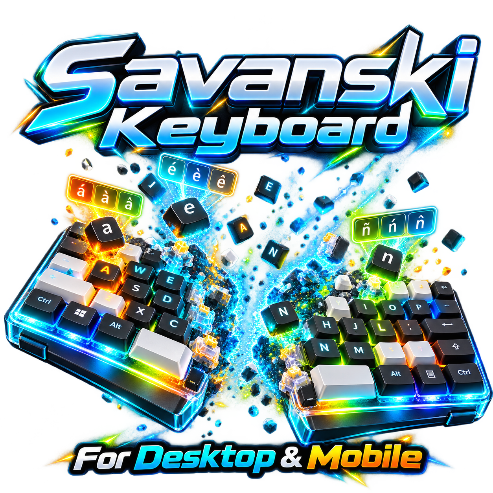

1 · Touch or mouse
Tap for a normal letter. Hold a key until its menu appears, then tap a variation or slide onto one and release. Use ⇧ for capitals and ?123 for more symbols.

Touch-first split keyboard with long-press accents, full Unicode writing tools, customizable colors and local-first preferences.
Web mode: keys type in this page. Install the separate Windows host for typing into other apps.
Type normally or select characters from the keyboard below.
Use the resizable Savanski keyboard at the bottom. Hold any accented key and select an alternative. Full Unicode and character tools remain below.
All 368 characters are included. Select a key to insert it at your cursor.
Give a key a label and the exact character or sequence it should insert. Useful for personal alphabets and transliteration. A custom key is not automatically a new Unicode character.
Select a character · arrow keys + Enter also work · Esc closes
Tap for a normal letter. Hold a key until its menu appears, then tap a variation or slide onto one and release. Use ⇧ for capitals and ?123 for more symbols.
Enable physical-keyboard hold above. In the writing area, hold a letter or punctuation key to open options. Choose with mouse/touch or arrow keys and Enter. Ordinary quick taps type normally.
While holding a letter, switch to Combining marks for all 112 original marks. The full 368-character reference, custom keys, favorites, import/export, and NFC controls remain available.
Save keyboard appearance and layout preferences to your existing Savanski v1 backend. No pairing or account required; each browser gets its own anonymous profile.
Cloud sync is optional. Typed text, clipboard contents, and keystrokes are never sent.